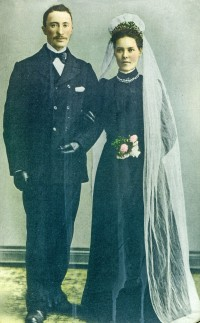
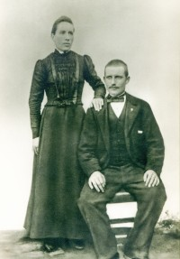

Ole Iversen
M, #29326, f. 1824, d. 16 mars 1870
Foreldre
Biografi
Ole Iversen ble født i 1824 på/i Klæbu, Sør-Trøndelag. Han giftet seg med
Karen Marie Pedersdatter den 21 juli 1861 på/i Namsos, Nord-Trøndelag. Han døde den 16 mars 1870 på/i Namsos, Nord-Trøndelag. Han ble gravlagt den 25 mars 1870 på/i Namsos, Nord-Trøndelag.
Ole Iversen was also known as Ole Løvhammeren. Han was also known as Ole Løvhammeren. Han bodde i 1865 på/i Løvhammeren, Sævig sokn, Namsos, Nord-Trøndelag.
| Sist redigert |
11 april 2020 00:00:00 |
Karen Marie Pedersdatter
K, #29327, f. 1829, d. 10 november 1910
Foreldre
Biografi
Karen Marie Pedersdatter ble født i 1829 på/i Løvhammer, Klinga, Namsos, Nord-Trøndelag. Hun giftet seg med
Ole Iversen den 21 juli 1861 på/i Namsos, Nord-Trøndelag. Hun døde som fattiglem den 10 november 1910 på/i Flosand, Lundring, Nærøy, Nord-Trøndelag. Hun ble gravlagt den 20 november 1910 på/i Lundring kirke, Nærøy, Nord-Trøndelag
+.
Karen Marie Pedersdatter was also known as Karen Marie Skei. Hun was also known as Caren Pedersdatter. Hun was also known as Karen Marie Spillum. Hun was also known as Karen Marie Bjørum. Hun was also known as Caren Pedersdatter. Hun ble født omtrent 1829 på/i Leka, Nord-Trøndelag. Hun bodde på/i Bjørum; Vemundvik, Namsos, Nord-Trøndelag. Hun and
Benjamin Hansen flyttet til Overhalla, Nord-Trøndelag, i 1861.
| Sist redigert |
28 august 2022 15:04:38 |
Arnold Arvid Horseng
M, #29332, f. 14 august 1930, d. 14 juni 2005
Foreldre
Familie: Anne Margrethe Finnvik
| Sønn | Bjørn Kristian Horseng+ |
| Datter | Toril Horseng+ |
| Datter | Marit Horseng+ |
| Sønn | Jan Arild Horseng+ |
Biografi
Arnold Arvid Horseng ble født den 14 august 1930 på/i Rørvik, Vikna, Nord-Trøndelag. Han giftet seg med Anne Margrethe Finnvik den 4 juli 1959 på/i Værnes prestekontor, Stjørdal, Nord-Trøndelag.

Han døde den 14 juni 2005 på/i Verdal, Nord-Trøndelag. Han ble gravlagt den 21 juni 2005 på/i Verdalsøre kapell, Verdal, Nord-Trøndelag.
| Sist redigert |
28 juli 2024 09:41:25 |
| Slektskap | 7-menning 2 ganger forskjøvet til Håkon Wahl |
Kristian Albertsen Horseng
M, #29334, f. 26 oktober 1885, d. 26 mars 1970
Foreldre
Biografi
Kristian Albertsen Horseng ble født den 26 oktober 1885 på/i Horseng 36/1, Horseng, Vikna, Nord-Trøndelag. Han giftet seg med
Anne Margrethe Pauline Rennemo. Han døde den 26 mars 1970. Han ble gravlagt den 2 april 1970 på/i Garstad kirkegård, Vikna, Nord-Trøndelag.
| Sist redigert |
15 juni 2024 21:13:16 |
| Slektskap | 6-menning 3 ganger forskjøvet til Håkon Wahl |
Anne Margrethe Pauline Rennemo
K, #29335, f. 1 september 1893, d. 9 februar 1986
Foreldre
Biografi
Anne Margrethe Pauline Rennemo ble født den 1 september 1893 på/i Nyheim 63/6, Hasfjord, Vikna, Nord-Trøndelag. Hun giftet seg med
Kristian Albertsen Horseng. Hun døde den 9 februar 1986. Hun ble gravlagt den 14 februar 1986 på/i Garstad kirkegård, Vikna, Nord-Trøndelag.
Anne Margrethe Pauline Rennemo was also known as Anne Margrethe Pauline Horseng. Hun bodde på/i Egge, Steinkjer, Nord-Trøndelag.
| Sist redigert |
21 august 2015 00:00:00 |
Bjarne Finnvik
M, #29336, f. 14 juni 1910, d. 19 februar 1996
Foreldre
Familie: Jenny Pauline Hammer (f. 17 juli 1911, d. 30 april 1995)
| Datter | Anne Margrethe Finnvik+ |
| Datter | Brynhild Finnvik+ (f. 17 juli 1939, d. 24 februar 1981) |
| Sønn | Tore Anders Finnvik+ |

Jenny og Bjarne Finnvik - bryllup
Biografi
Bjarne Finnvik ble født den 14 juni 1910 på/i Nærøya, Nærøy, Nord-Trøndelag. Han giftet seg med
Jenny Pauline Hammer den 21 november 1936 på/i Nærøy, Nord-Trøndelag.
Han døde den 19 februar 1996 på/i Vikna, Nord-Trøndelag. Han ble gravlagt den 27 februar 1996 på/i Østre gravlund, Rørvik, Vikna, Nord-Trøndelag.
Bjarne Finnvik ble konfirmert i 1925 på/i Nærøy, Nord-Trøndelag. Han kjøpte i 1947 Solset 10/188, Rørvik, Vikna, Nord-Trøndelag.
| Sist redigert |
9 mars 2025 22:59:47 |
| Slektskap | 6-menning 1 gang forskjøvet til Håkon Wahl |
Jenny Pauline Hammer
K, #29337, f. 17 juli 1911, d. 30 april 1995
Foreldre
Familie: Bjarne Finnvik (f. 14 juni 1910, d. 19 februar 1996)
| Datter | Anne Margrethe Finnvik+ |
| Datter | Brynhild Finnvik+ (f. 17 juli 1939, d. 24 februar 1981) |
| Sønn | Tore Anders Finnvik+ |
Jenny og Bjarne Finnvik - bryllup
Biografi
Jenny Pauline Hammer ble født den 17 juli 1911 på/i Frøya, Sør-Trøndelag. Hun giftet seg med
Bjarne Finnvik den 21 november 1936 på/i Nærøy, Nord-Trøndelag.
Hun døde den 30 april 1995 på/i Vikna, Nord-Trøndelag. Hun ble gravlagt den 4 mai 1995 på/i Østre gravlund, Rørvik, Vikna, Nord-Trøndelag.
Jenny Pauline Hammer was also known as Jenny Pauline Finnvik.
| Sist redigert |
9 mars 2025 22:59:12 |
Martin Elenius Finnvik
M, #29338, f. 6 desember 1881, d. 22 mars 1968
Foreldre

Anna og Martin E Finnvik
Biografi
Martin Elenius Finnvik ble født den 6 desember 1881 på/i Finnvika søndre, Nærøya, Nærøy, Nord-Trøndelag. Han giftet seg med
Anna Pauline Tharaldsen.
Han døde den 22 mars 1968 på/i Vikna, Nord-Trøndelag. Han ble gravlagt den 28 mars 1968 på/i Østre gravlund, Rørvik, Vikna, Nord-Trøndelag.
| Sist redigert |
9 mars 2025 15:02:34 |
| Slektskap | 5-menning 2 ganger forskjøvet til Håkon Wahl |
Anna Pauline Tharaldsen
K, #29339, f. 27 januar 1882, d. 25 mai 1921
Foreldre
Biografi
Anna Pauline Tharaldsen ble født den 27 januar 1882 på/i Borgan, Vikna, Nord-Trøndelag. Hun giftet seg med
Martin Elenius Finnvik.
Hun døde den 25 mai 1921 på/i Finvik. Hun ble gravlagt den 3 juni 1921 på/i Lundring kirkegård, Nærøy, Nord-Trøndelag.
Anna Pauline Tharaldsen was also known as Anna Finnvik. Hun ble konfirmert den 25 juli 1897 på/i Vikna, Nord-Trøndelag.
| Sist redigert |
9 mars 2025 15:06:28 |
Edvin Magnus Tharaldsen
M, #29340, f. 21 oktober 1851, d. 21 august 1928
Foreldre
Biografi
Edvin Magnus Tharaldsen ble født den 21 oktober 1851 på/i Kjønsøy, Vikna, Nord-Trøndelag. Han giftet seg med
Nikoline Emelie Andersdatter Lysø den 28 august 1881 på/i Vikna, Nord-Trøndelag. Han døde den 21 august 1928 på/i Vikna, Nord-Trøndelag. Han ble gravlagt den 26 august 1928 på/i Valøy kirkegård, Vikna, Nord-Trøndelag.
Edvin Magnus Tharaldsen was also known as Magnus Tharaldsen.
| Sist redigert |
14 august 2017 00:00:00 |
Nikoline Emelie Andersdatter Lysø
K, #29341, f. 21 juni 1851, d. 31 mai 1931
Foreldre
Biografi
Nikoline Emelie Andersdatter Lysø ble født den 21 juni 1851 på/i Lysøya, Vikna, Nord-Trøndelag. Hun giftet seg med
Edvin Magnus Tharaldsen den 28 august 1881 på/i Vikna, Nord-Trøndelag. Hun døde den 31 mai 1931 på/i Vikna, Nord-Trøndelag. Hun ble gravlagt den 7 juni 1931 på/i Valøy kirkegård, Vikna, Nord-Trøndelag.
Nikoline Emelie Andersdatter Lysø ble døpt den 1 august 1852 på/i Vikna, Nord-Trøndelag.
| Sist redigert |
14 august 2017 00:00:00 |
Beret Maria Eliasdatter
K, #29342, f. 23 august 1845, d. 26 mai 1928
Foreldre
Biografi
Beret Maria Eliasdatter ble født den 23 august 1845 på/i Torstad, Nærøy, Nord-Trøndelag. Hun giftet seg med
Thomas Edvard Mathiassen den 11 november 1875. Hun døde den 26 mai 1928 på/i Nærøy, Nord-Trøndelag.
Beret Maria Eliasdatter was also known as Beret Maria Mathiassen. Hun ble født den 23 august 1848 på/i Leirvik; Foldereid, Nærøy, Nord-Trøndelag.
| Sist redigert |
2 mars 2014 00:00:00 |
| Slektskap | 4-menning 3 ganger forskjøvet til Håkon Wahl |
Elen Gundersdatter
K, #29343, f. 3 oktober 1815, d. 1 november 1903
Foreldre
Biografi
Elen Gundersdatter ble født den 3 oktober 1815 på/i Galtnessetran 9/2, Galtvig; Kolvereid, Nærøy, Nord-Trøndelag. Hun giftet seg med
Mathias Taraldsen den 22 oktober 1847. Hun døde den 1 november 1903 på/i Lørdagsvik 14/12, Nærøya, Nærøy, Nord-Trøndelag.
Elen Gundersdatter was also known as Elen Taraldsen.
| Sist redigert |
2 mars 2014 00:00:00 |
Gunder Olsen
M, #29344, f. omtrent 1765
Biografi
| Sist redigert |
2 mars 2014 00:00:00 |
Johanna Kjerstina Hallesdatter Saur
K, #29345, f. 1787, d. omtrent 1860
Foreldre
Biografi
Johanna Kjerstina Hallesdatter Saur ble født i 1787 på/i Saur; Foldereid, Nærøy, Nord-Trøndelag. Hun giftet seg med
Gunder Olsen. Hun døde omtrent 1860 på/i Nærøy, Nord-Trøndelag.
| Sist redigert |
2 mars 2014 00:00:00 |
Tarald Christophersen
M, #29346, f. 1781, d. 17 juni 1858
Foreldre
Biografi
Tarald Christophersen ble født i 1781 på/i Skaftnesmoen; Foldereid, Nærøy, Nord-Trøndelag. Han giftet seg med
Else Marie Clausdatter i 1808 på/i Kolvereid kirke, Nærøy, Nord-Trøndelag. Han døde den 17 juni 1858 på/i Finnvika, Nærøya, Nærøy, Nord-Trøndelag.
| Sist redigert |
30 desember 2025 23:47:51 |
Else Marie Clausdatter
K, #29347, f. 1779, d. 7 juni 1864
Foreldre
Biografi
Else Marie Clausdatter ble født i 1779 på/i Leirvik; Foldereid, Nærøy, Nord-Trøndelag. Hun giftet seg med
Tarald Christophersen i 1808 på/i Kolvereid kirke, Nærøy, Nord-Trøndelag. Hun døde den 7 juni 1864 på/i Finnvika, Nærøya, Nærøy, Nord-Trøndelag.
| Sist redigert |
2 mars 2014 00:00:00 |
| Slektskap | 3-menning 5 ganger forskjøvet til Håkon Wahl |
Ole Anton Vilhelm Mathiassen
M, #29348, f. 1 mai 1858, d. 24 november 1924
Foreldre
Biografi
Ole Anton Vilhelm Mathiassen ble født den 1 mai 1858 på/i Finnvika, Nærøya, Nærøy, Nord-Trøndelag. Han giftet seg med
Oline Lovise Eliasdatter. Han døde den 24 november 1924 på/i Finnvika, Nærøya, Nærøy, Nord-Trøndelag.
| Sist redigert |
2 mars 2014 00:00:00 |
| Slektskap | 5-menning 3 ganger forskjøvet til Håkon Wahl |
Oline Lovise Eliasdatter
K, #29349, f. 7 september 1870, d. 18 juli 1935
Foreldre
Biografi
Oline Lovise Eliasdatter ble født den 7 september 1870. Hun giftet seg med
Ole Anton Vilhelm Mathiassen. Hun døde den 18 juli 1935 på/i Finnvika, Nærøya, Nærøy, Nord-Trøndelag.
| Sist redigert |
2 mars 2014 00:00:00 |
Claus Arntsen
M, #29350, f. 1749, d. 1791
Foreldre
Biografi
Claus Arntsen ble født i 1749 på/i Leirvik; Foldereid, Nærøy, Nord-Trøndelag. Han giftet seg med
Elisabet Ottesdatter i 1774. Han døde i 1791 på/i Leirvik midtre 6/1, Leirvik; Foldereid, Nærøy, Nord-Trøndelag.
Claus Arntsen was also known as Klas Leirvikja.
| Sist redigert |
2 mars 2014 00:00:00 |
| Slektskap | Søskenbarn 6 ganger forskjøvet til Håkon Wahl |
{kind=link}
{kind=link}